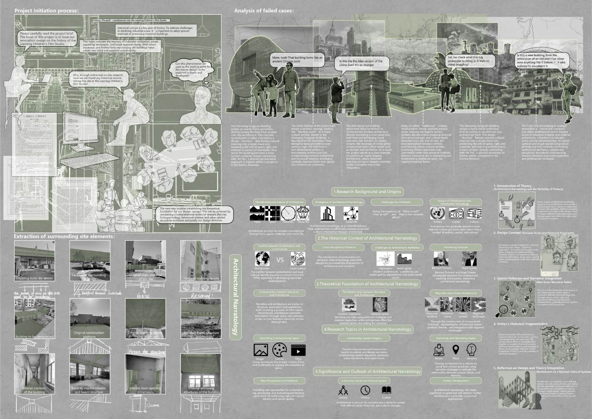
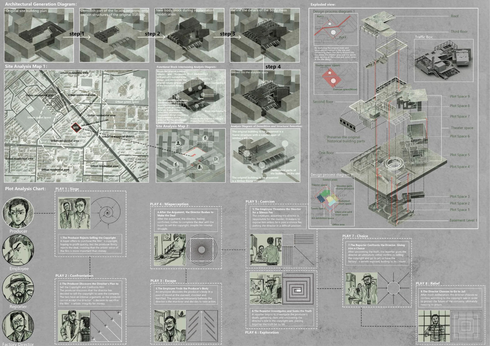
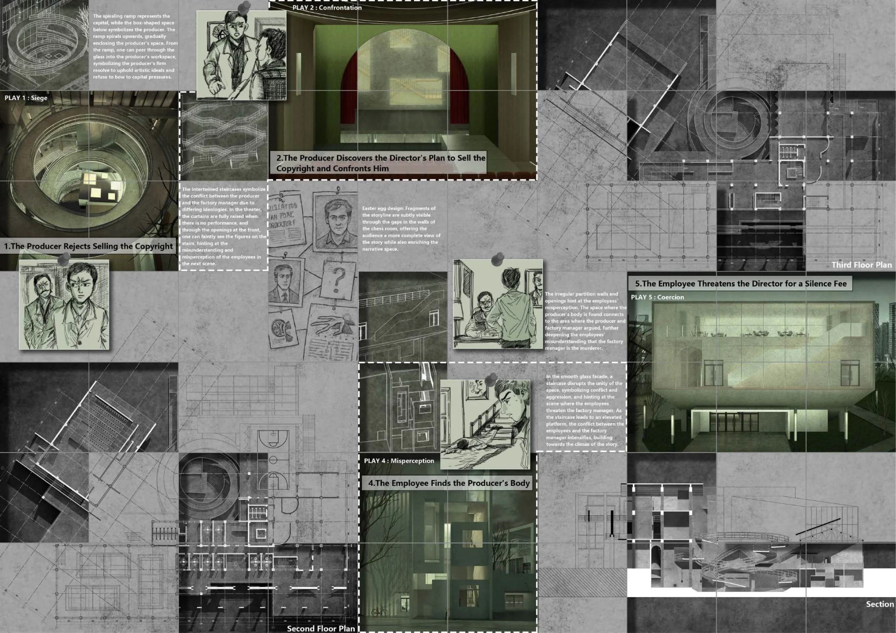
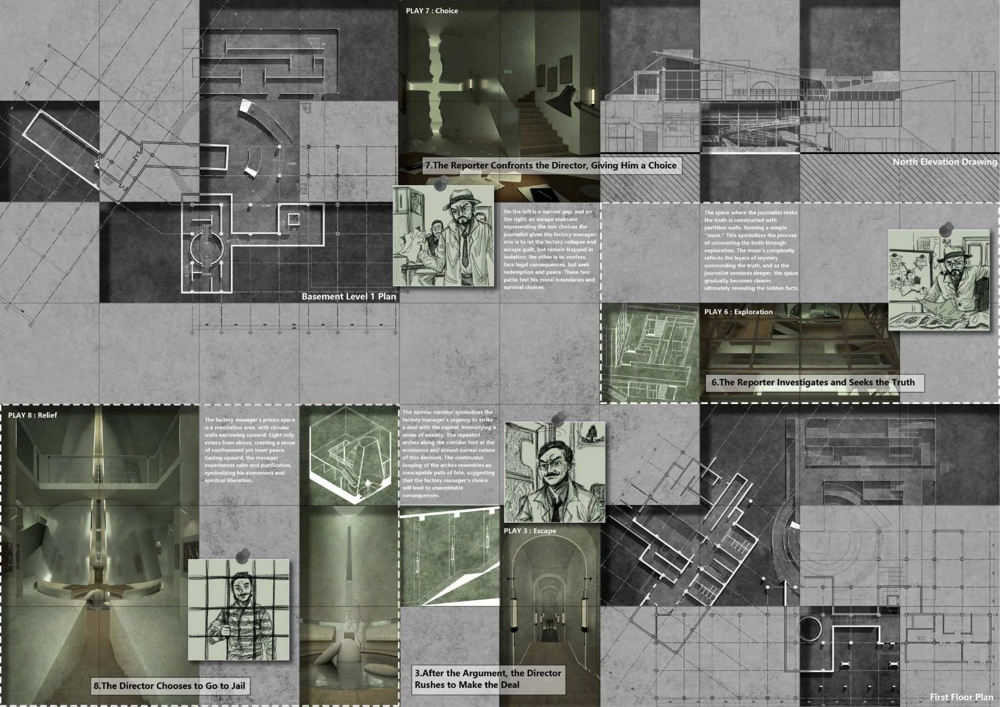
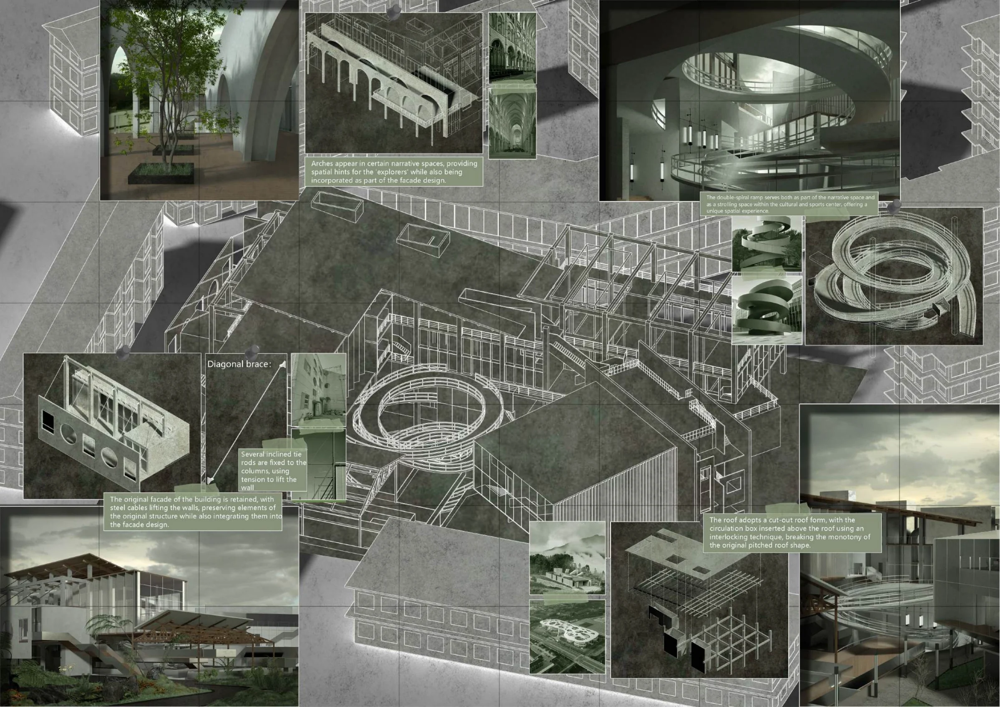

Lost History
遗失的历史
电影 × 建筑2025 / 个人项目
 查看主图
查看主图 在空间中，重新拼接一段故事。
以辽宁儿童电影制片厂的改造为起点，把电影叙事转化为建筑中的空间序列和参观路径。访客在不同位置遇见叙事片段，通过移动与探索逐渐形成对故事的理解。
- 项目类型
- 个人项目 / 2025
- 本人工作
- 研究、叙事策略、空间与流线设计、Rhino建模、V-Ray渲染及图纸表达
- 使用工具
- Rhino / V-Ray
叙事研究
将电影与建筑进行类比，围绕历史片段与空间体验形成设计策略。
空间组织
以体量、楼层、流线和构件承载故事，使参观路径成为叙事的一部分。
场景表达
完成室内外渲染、爆炸轴测及平剖面，表达复杂场景与空间层次。
项目图纸与过程
点击图纸，查看大图。


查看大图

查看大图

查看大图

查看大图

查看大图